Unique instrument Flying on board Rosetta
MIDAS (Micro-Imaging Dust Analysis System)
Principal Investigator: Dr. Thurid Mannel, IWF/ÖAW, Graz, Austria
What is MIDAS?
MIDAS (Micro-Imaging Dust Analysis System) studies the cometary dust and the asteroids that were visited during the journey of Rosetta. MIDAS is one of three main instruments (i.e., GIADA, COSIMA, and MIDAS) that have studied cometary dust particles. GIADA measures how many/how big dust particles there/they are and how fast they move. COSIMA determines what it is made of. MIDAS is based on the atomic force microscopy technique and performing "microanalysis" of the cometary dust particles, as the name already indicated. This instrument is designed to measure the smallest objects possible and has the very sensing tips mounted on the 16 cantilevers that are scraped across the surface of dust particles. This finally allows drawing the 3D(!) image of them.
Why MIDAS is amazing?
MIDAS is different. MIDAS doesn’t use light! Using light means that their resolution of observations is wavelength/diameter-dependent and thus limited if we want to look at a smaller scale. Instead, MIDAS collects dust grains on targets and scans with a very powerful tool to know their structure with extremely high resolution (having features as small as 4 nm). This means that this tool is ideal for the investigation of very tiny cometary dust at the nanometre scale, which may be the smallest building blocks of our Solar system. MIDAS provides information not only on dust particle's shapes but also population, size, volume.
How does this works?
0. The instrument is designed and supposed to collect dust particles from the coma of comet 67P. which becomes active as it is heated by our Sun. Do not worry, Rosetta orbiter was always there for the dust collection :) Furthermore, a funnel of MIDAS usually pointed towards the comet.
1. Dust collecting process is started by exposing a sticky target (1.4 mm x 2.4 mm in size) to the dust environment around spacecraft. Note that MIDAS can scan up to 100 µm, though the size of facets is rather big.
2. Dust particles are coming (with speeds ~1 – 10 m/s; which is good because the slower
the particle, generally the more pristine) though the funnel of MIDAS, passing through the shutter and collected to rest on one of 61 coated target/facet ("collectors"), which is already mounted on the circumference of a sample wheel.
3. After collecting dust particles, the sample wheel is rotated so that the facet is directly in front of the microscope stage, in particular, one of 16 (!) cantilevers. Each cantilever has a 10 µm long sharp tip mounted at its end. The cantilever array is mounted on an XYZ stage, which moves the tip over the target (and sample) and thus its deflection is recorded line by line (each less than 1 mm long, at a grid of up to 512 x 512 points) to reconstruct the 3D shape of the object.
* MIDAS is a very sensing instrument, but the dust particles are supposed (expected) to be rather fragile and thus can be destroyed (and/or distorted) by the tip of the cantilever. To avoid destroyed particles (which doesn't mean that dust particles are not absolutely destroyed. Bigger size dust particles are rather fragile), MIDAS has a dynamic mode, in which the cantilever oscillates when they close to the sample. The tips can feel the sample before they touch it due to the electrostatic and magnetic force between tips and sample. Approaching of tips to sample changes finally the resonance frequency of the coupled tip-sample system and thus used to detect their surface.
4. MIDAS basically tracks the dust surface with a fast feedback loop. For example, it approaches each pixel position separately and, on reaching the surface, retreats by a “retraction height” before approaching the next position. This is a rather safe process, but very time consuming.
What do we learn from it?
The detailed shape (and of course size) of cometary dust particles can tell us more about how they formed, and how they aggregate together to make larger “fluffy” particles. This information finally may tell us how/where these particles formed and how they interact with gas and/or light.
 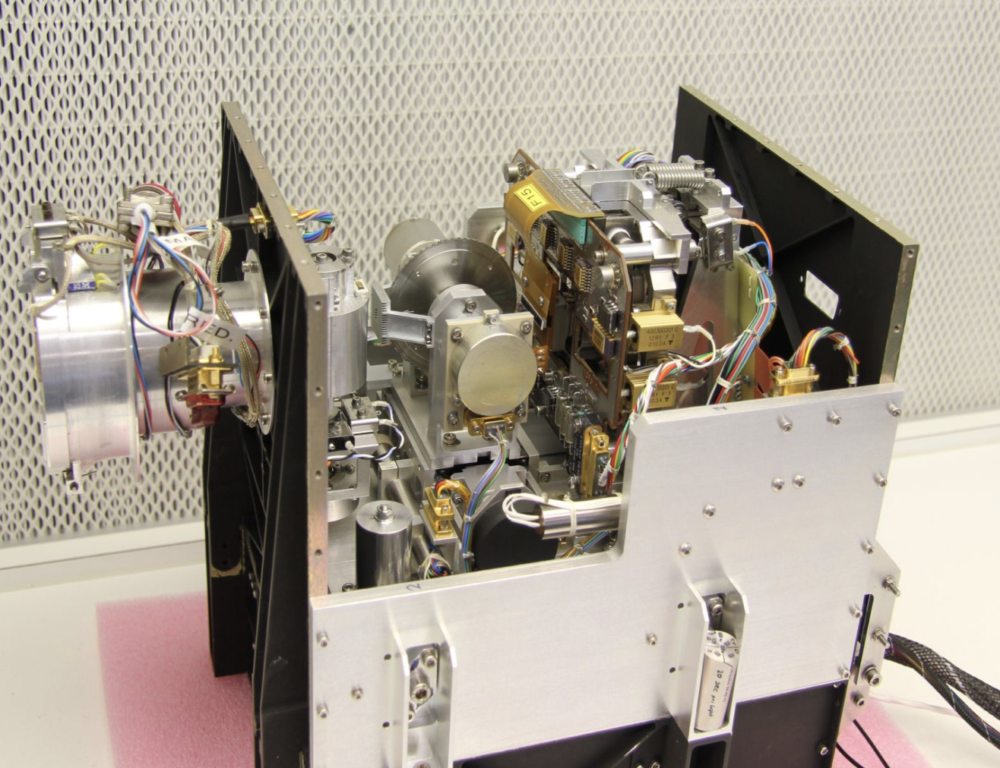
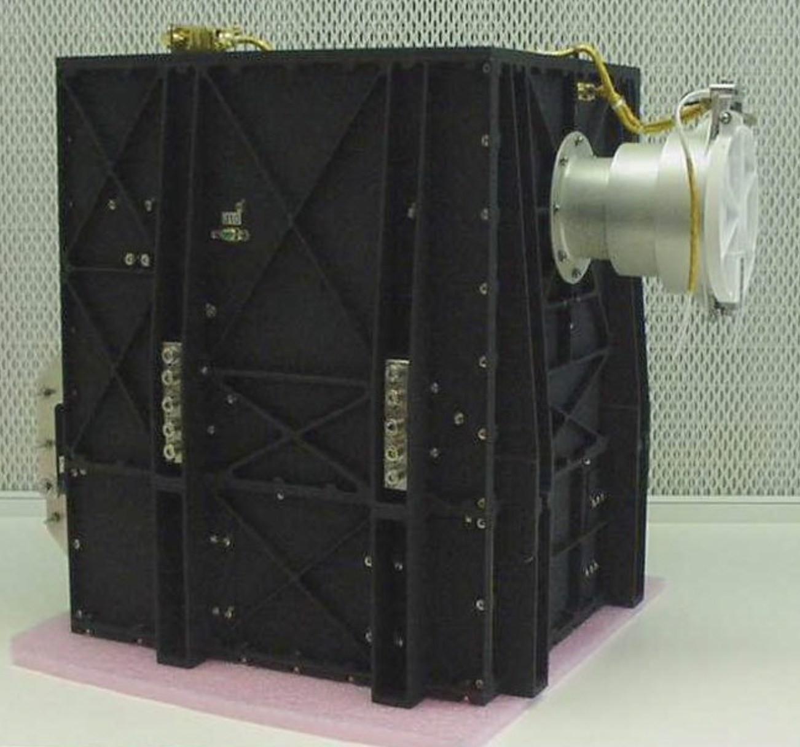
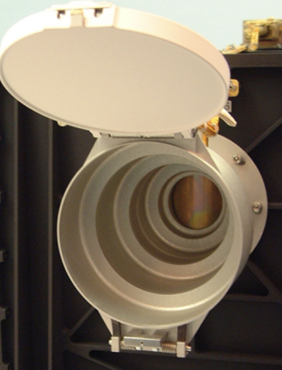
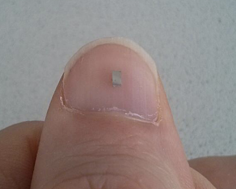
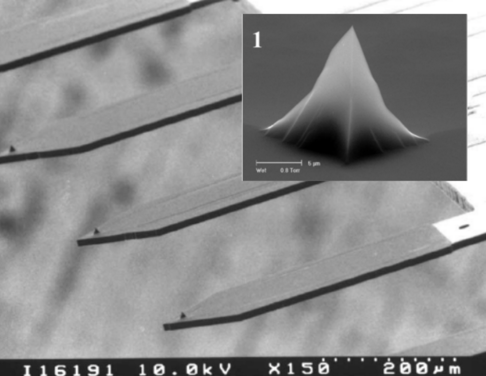
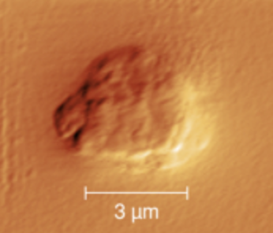
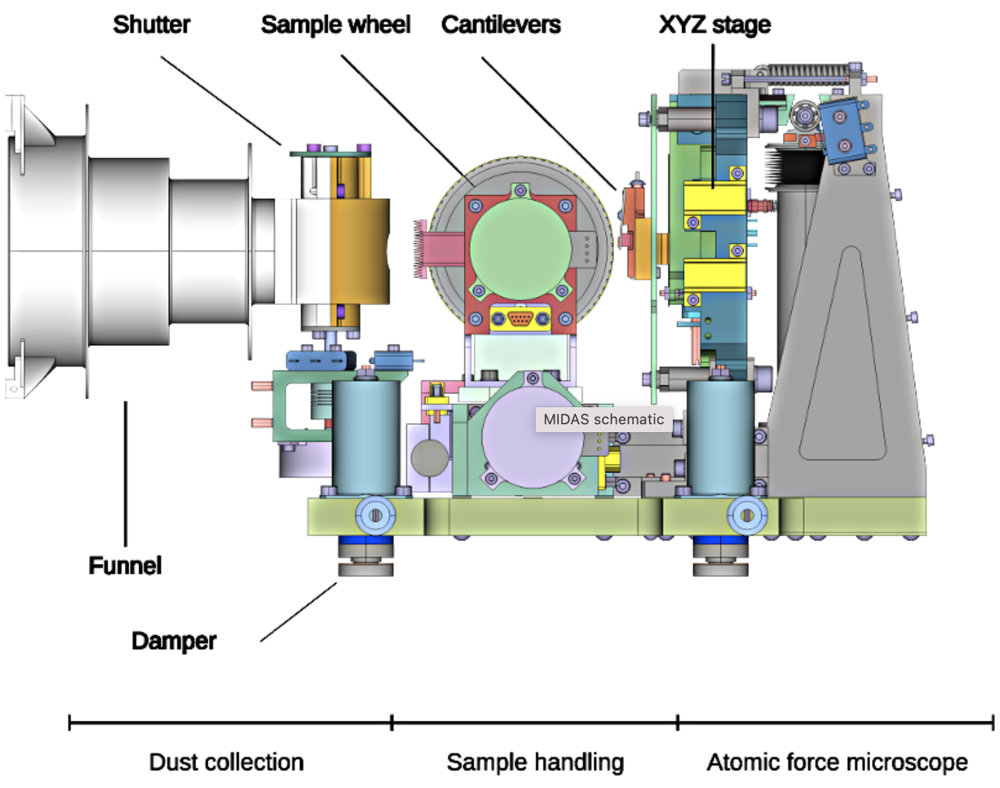
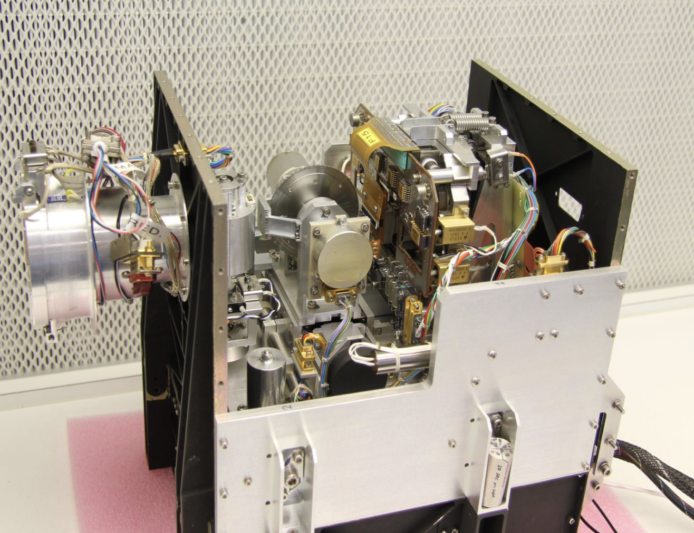
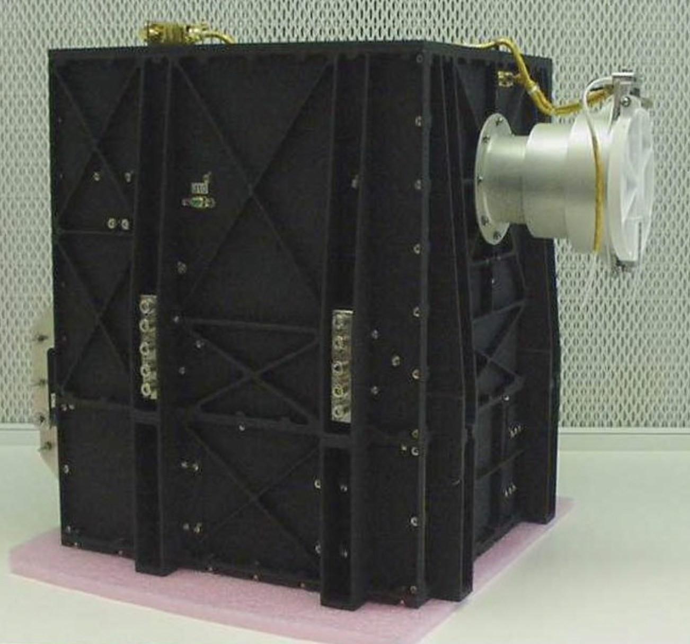
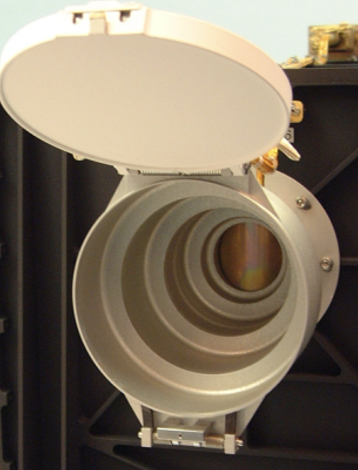
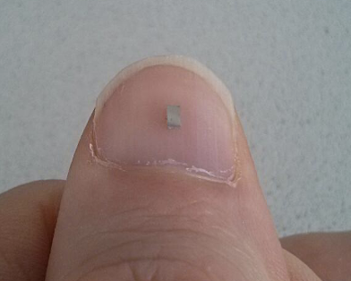
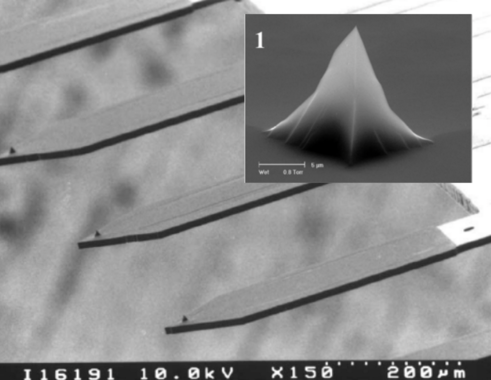
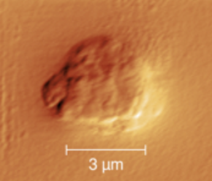
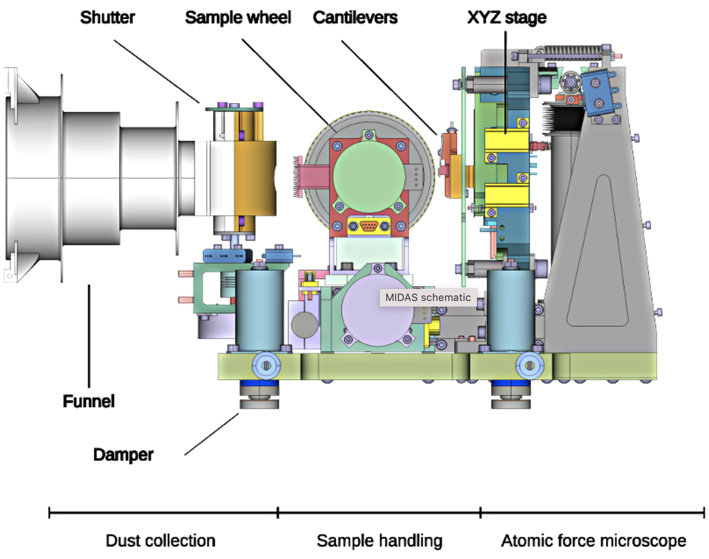
Figures from the top to bottom:
MIDAS assemble
MIDAS when the top is opened
The funnel of MIDAS
Individual facet
Wheel
A close-up of MIDAS tips on cantilevers
Example 3D image of MIDAS
The schematic diagram of the key components in the MIDAS
All the Image courtesy in this page: ESA/Rosetta/MIDAS/IWF/ÖAW, Dr. Mark Bentley and Dr. Thurid Mannel